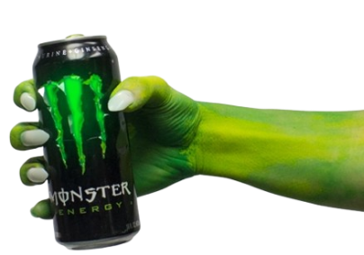
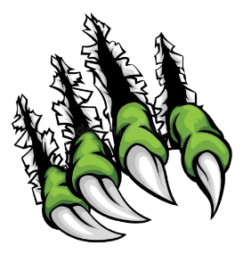

Monster Energy
Su historia
El origen
Monster Energy se lanzó oficialmente en abril de 2002, revolucionando completamente el mercado de bebidas energéticas
Su fórmula única contenía una mezcla potente de:
- 160mg de cafeína por lata
- Taurina para resistencia
- Ginseng para energía sostenid
- Vitaminas B
- Guaraná y otros extractos naturales
El icónico logo de la "M" formada por tres garras se convirtió rápidamente en un símbolo reconocible mundialmente, asociado con energía, rebeldía y estilo de vida extremo

Monster Hoy
Actualmente, Monster Energy es la segunda marca de bebidas energéticas más vendida del mundo, con presencia en más de 100 países y docenas de sabores diferentes
La marca patrocina a los mejores atletas y eventos en:
- Deportes extremos (motocross, BMX, skateboarding)
- NASCAR y automovilismo
- eSports (equipos profesionales de gaming)
- UFC y artes marciales mixtas
- Música (tours y festivales)
Monster Beverage Corporation tiene un valor de mercado superior a $50 mil millones de dólares, convirtiéndola en una de las empresas de bebidas más valiosas y exitosas del planeta

VISITA SU SITIO OFICIAL